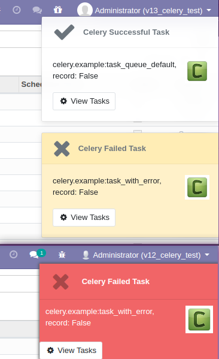
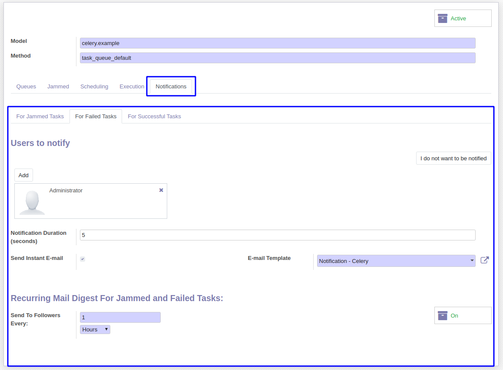

<section class="oe_container">
    <div class="oe_row oe_spaced">
        <h2 class="oe_slogan" style="color:#875A7B;">Celery Task Notifications</h2>
        <h3 class="oe_slogan">Adds notification features to the Celery module</h3>

    </div>
    <h2 class="oe_slogan">
        <font color="#3b5998">E-mail and web client notifications.</font>
    </h2>
    <div>
        <ul>
            <li>Receive notifications when Celery tasks fail, get jammed or whenever they succeed.</li>
            <li>Configurable per type of a task/setting.</li>
            <li>E-mail notifications contain a link to the specific task.</li>
            <li>E-mail digest option triggered on an recurring (hourly/daily) basis.</li>
        </ul>
    </div>
</section>
<section class="oe_container oe_dark">
    <div class="oe_row oe_spaced">
        <h2 class="oe_slogan" style="color:#875A7B;">Web pop-up notifications to the task followers</h2>
        <div class="oe_span2">
             <p class="text-center">
            <br><br>
             Enable/Disable button, simply enable tracking <br/> on the vehicle's page
            </p>
        </div>
        <div class="oe_span10">
            
        </div>
    </div>
</section>

<section class="oe_container">
    <div class="oe_row oe_spaced">
        <h2 class="oe_slogan" style="color:#875A7B;">Notification settings and e-mail digest.</h2>
        <div class="oe_span6">
            
        </div>
    </div>
</section>

<section class="oe_container oe_dark">
    <div class="oe_row oe_spaced">
        <div class="oe_span6">
            <h3 class="oe_slogan" style="text-align: left;">Dependencies/pre-requisites:</h3>
            <p class="oe_mt32">
            <br><br>
                <ul>
                    <li><a href="https://github.com/novacode-nl/odoo-celery" target="_blank">Odoo Celery module (LGPL-3)</a></li>
                    <li><a href="https://github.com/naglis/misc-addons" target="_blank">User Action Notfications module (LGPL-3)</a></li>
                </ul>
            </p>
        </div>
    </div>
</section>
<section class="oe_container oe_dark">
    <h3 class="oe_slogan" style="text-align: left; margin-top:20px;">Authors</h3>
    <p class="oe_mt32">
        <br><br>
        Otrium B.V.<br><br>

    </p>
</section>
